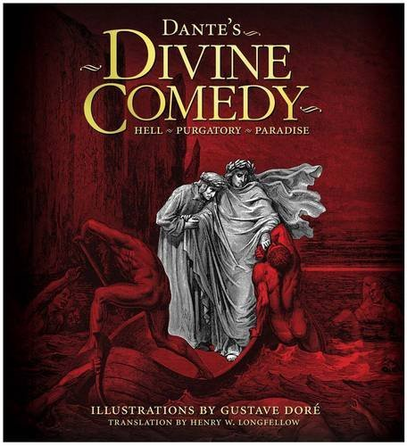

Divine Comedy
The Divine Comedy (Italian: Divina Commedia) is an epic poem written by Dante Alighieri between c. 1308 and his death in 1321. It is widely considered the preeminent work of Italian literature, and is seen as one of the greatest works of world literature.The poem's imaginative and allegorical vision of the afterlife is representative of the medieval world-view as it had developed in the Western Church by the 14th century. It helped establish the Tuscan dialect, in which it is written, as the standardized Italian language.It is divided into three parts: Inferno, Purgatorio, and Paradiso.

On the surface, the poem describes Dante's travels through Hell, Purgatory, and Heaven; but at a deeper level, it represents, allegorically, the soul's journey towards God. At this deeper level, Dante draws on medieval Christian theology and philosophy, especially Thomistic philosophy and the Summa Theologica of Thomas Aquinas. Consequently, the Divine Comedy has been called "the Summa in verse".
The work was originally simply titled Commedìa and was later christened Divina by Giovanni Boccaccio. The first printed edition to add the word divina to the title was that of the Venetian humanist Lodovico Dolce, published in 1555 by Gabriele Giolito de' Ferrari.
FAQ
- What happened during Dante's beatific vision?
- St. Bernard offers up a Prayer to the Virgin Mary to request that Dante be permitted a look at the Beatific Vision of God. It is the vision of Beatrice's deification, immediately after which. Dante becomes mortal again. From here on, Dante has the truth stamped upon his soul, and the knowledge that he will one day reside in the presence of God.
- In Dante's Inferno in Cantos 20 what were the punishments of the diviners,astrologers, and magicians?
- I'm not sure exactly what you mean in this question, but I think the answer you might be looking for is the Gate of Purgatory. This would provide the middle term for his three canticas: namely, Hell, Purgatory, and Paradise.
- What is an example of allusion in Dante's Inferno Canto 1?
- In “The Waste Land,” there are several allusions to Dante’s Divine Comedy, including specific references to the Inferno. For example, the first of these allusions occurs in the opening section of the poem, entitled “The Burial of the Dead.” Lines 60 to 63 of this section read, “Unreal City, under the brown fog of a winter dawn, a crowd flowed over London Bridge, so many, I had not thought death had undone so many.” Eliot’s note to this section refers the reader to Canto III of the Inferno, lines 55-56, in which Dante says “I should never have believed death had undone so many.”
- In Dante's Inferno what are the gates off hell the Dante must pass through?
- In the Fourth Pouch, Dante sees a line of sinners trudging slowly along as if in a church procession. As they pass by the Fourth Pouch, Virgil names several of the sinners here, who were Astrologers, Diviners, or Magicians in life. He explains the punishment of one specific sinner, saying that, since this individual wanted to use unholy powers to see ahead in life (that is, into the future), he has now been condemned to look backward for all of time. Virgil and Dante also see the sorceress Manto there, and Virgil relates a short tale of the founding of Mantua. They then continue on to the Fifth Pouch.
- Can some one explain the symbolic meaning of the phoenix in canto XXIV? The phoenix is a important part in canto XXIV but can someone explain meaning of the phoenix and what does it represent?
- The phoenix is a mythological bird who burns itself to death every five-hundred years, only to rise from the ashes unharmed. There is only one phoenix.